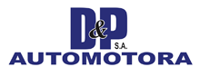

Elegir la presentación
Es el mismo sistema en las seis: las mismas pantallas, los mismos botones, los mismos permisos y los mismos datos. Lo único que cambia es cómo se ve. Abra las que quiera, compárelas y quédese con una.

Es el mismo sistema en las seis: las mismas pantallas, los mismos botones, los mismos permisos y los mismos datos. Lo único que cambia es cómo se ve. Abra las que quiera, compárelas y quédese con una.